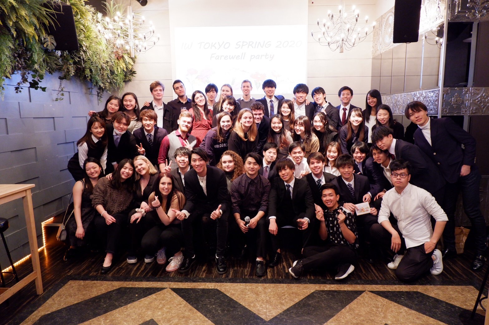

2020 - 現在
慶應義塾大学で政治学を学んでいます。ゼミでは行政学・ガバナンスを研究するゼミに所属し、GovTechや行政DXに関して研究を行っています。このこの研究を選んだ理由として、高校の時にエストニアという電子国家に興味を持ったからです。煩雑な行政手続きが電子上で完結する便利さに衝撃を受け、日本でもこのような便利なサービスを作りたいと考えました。
課外活動として慶應義塾福利厚生団体国際関係会（I.I.R）に所属し、International Week Spring 委員長、PAL project 渉外部を務めました。コロナウイルスの影響で０から企画・運営までをオンラインでやり遂げました。大変だったこととして、①オンライン全く先が見えない状況でのモチベーションの低下、②コミュニケーション不足による心理的安全性の欠如です。この中で私はチームをまとめるために2つの事に取り組みました。1点目がミッション・ビジョン・バリューの策定、2つ目が全員との月１面談です。１点目に関しては、先が見えない状況であっても、なぜ僕たちがイベントを運営するのか、これにはどんな意味があるのか、このイベントの先にどんな素晴らしい未来が待っているかをミーティング毎に語り、みなのモチベーションと団結力を高めました。また２点目に関しては、運営メンバーとの面談の中で、彼らが日常どのようなことを取り組んでいるのか、モチベーションの源泉はどこか、悩みはなにか、そして将来の夢、などをお互いに共有し、信頼関係を築くとともに、彼ら１人１人の特性に合った仕事を振ることやコミュニケーションを取ることを心がけました。結果としてイベントを無事開催することができ、現在まで交流が続くチームを作り上げることができ、彼らとの関係は僕の生きがいになっています。

大学３年時に交換留学でウィスコンシン大学マディソン校に留学予定でしたが、コロナウイルスの影響もあり断念をしたので、大学４年時にニセコに国内留学をし英語力を確かなものにする予定です。

2016 - 2019
千葉県柏市にある柏駅から徒歩５分のところに立地する、東葛飾高校に入学しました。私服高校が故の自由な校風やリベラルな環境で育ち、自由とは何か、生きるとは何かといったことを先生達に考えさせられました。

高校では、小学校から続けている陸上にすべてを捧げました。100mは11.14の自己ベストを持っています。ですが１０秒台を目標に今まで取組んできたので、僕の人生の中での大きな挫折です。ですが、数字という形で自分の実力がはっきりと出るある意味残酷な世界で、地味な練習をコツコツと積み上げる、その忍耐力と目標達成能力が身についたと考えています。 また仲間と共につないだリレーの感動は今でも忘れません。
高校３年時にアメリカ合衆国カリフォルニア州サンタバーバラに留学をしました。いろんな価値観の人があつまる環境で、他人に対して寛容になることを学びました。また英語というツールを使って全く違う考えの人と心を通わせ、相互理解を深めることにとても充実感を感じ、多様な価値観の人がいる刺激的な環境に身を置くというミッションステートメントができました。そしてここでサーフィンとカリフォルニアアクセントの虜になりました笑
2013 - 2016
地元の中学校に入学後、陸上部に所属。３年間を通して学級委員を務めました。3年時には学年委員長として学年をまとめあげる経験をしました。また、北部中学校は合唱祭、体育祭などの行事を本気でやる風潮が伝統的にあり、「何事もオンオフをつけ本気でやること」が、かっこいいという考えが心に刻まれました。

2021 - 現在
横浜未来機構（YOXO）に事務局員としてジョインしています。この団体の目的として、横浜地域における新たなチャレンジをエンパワメントする「イノベーション創出の推進」エリア内外の様々なプレイヤーを有機的につなぐ「ネットワーク推進」、横浜をフィールドに未来都市を築いていく「イノベーションのエリアマネジメント機関」があります。横浜をフィールドにイノベーションを生み出す実証実験や社会実装を進め、“未来都市”を築く活動の一助を担っています。
2020 - 現在

株式会社SDBでエンジニアのインターン生として働いています。ITエンジニアとしてフロントエンド・バックエンドの学習の一貫として,大学で所属する国際交流団体のイベント管理システムを自作しました（上画像）。現在はオリエンタルランド工事現場のお弁当注文管理システムなどに関わっています。

2019 - 現在
株式会社リソー教育グループの運営する学習塾TOMASで小学生から高校生まで、主に英語、国語、社会を教えた。人にものごとをわかりやすく伝えるためにはどうしたら良いのかを学びました。
2019 - 2019

横浜の地下街のレストランでホールとしてバイトをしていました。イタリアンのマナー、ワインの種類、接客の仕方などを学びました。
千葉県流山市富士見台2-7-37
takahiro.kikuchi@keio.jp
080-8499-4899